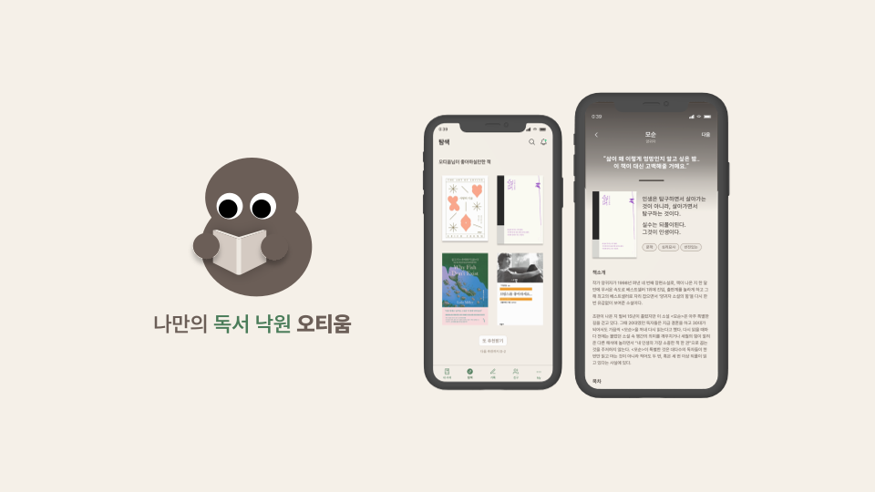
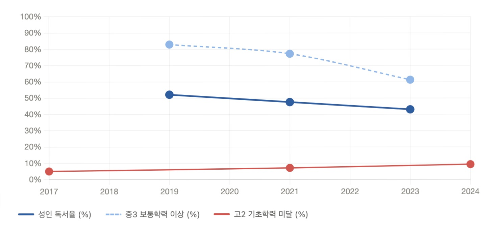
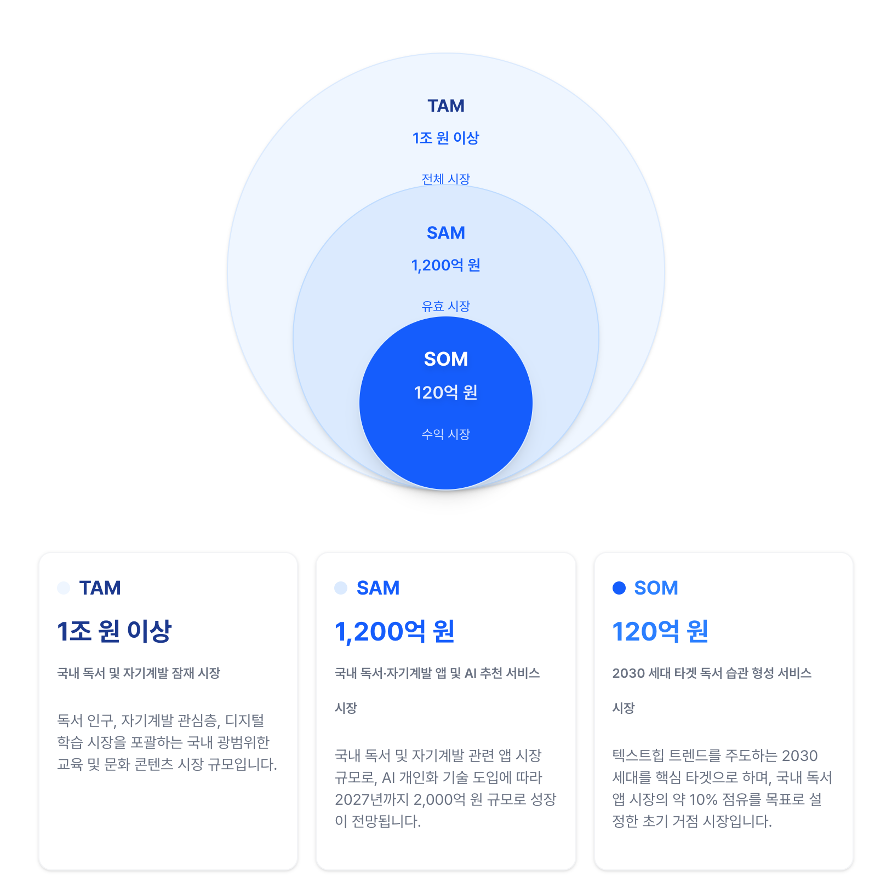
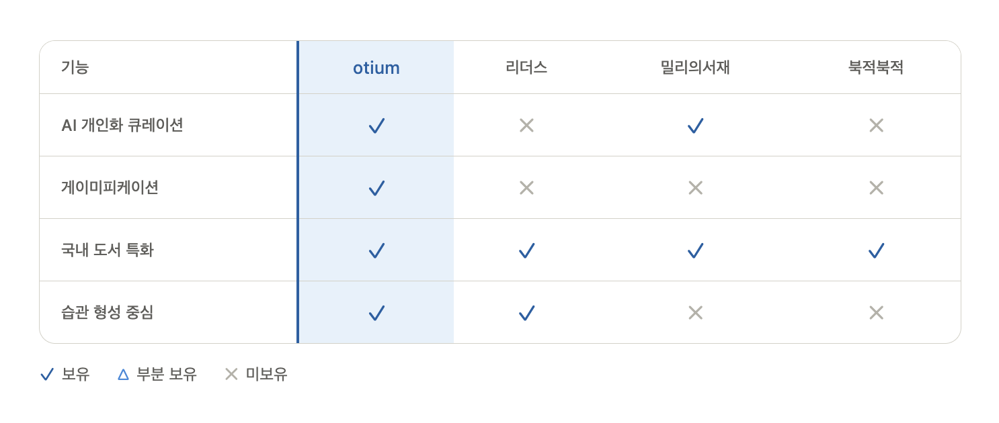
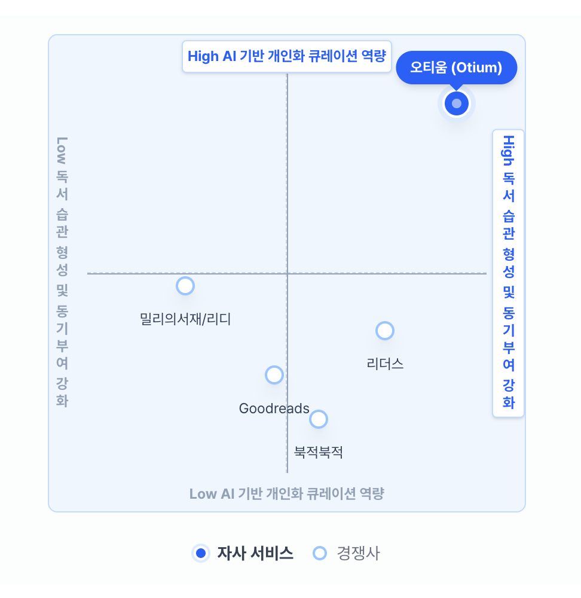

나만의 독서 낙원, 오티움
AI 기반 독서습관 형성 앱 — 기획·디자인·개발·MVP 배포
Live ↗
개요
오티움은 AI 기반 독서습관 형성 앱으로, 게이미피케이션을 통한 동기부여로 사용자가 꾸준히 독서를 하도록 돕습니다.
Solo Project
1인 + AI Agent
✅ 기여도 100%
Period
2026.03 – 현재
Tools
Figma
Figma Make
Claude Code
Github
Vercel
Supabase
독서 앱은 왜 꾸준히 쓰기 힘들까?
국내 2030 독서 관심층은 "무엇을 읽어야 할지 모름", "시작해도 완독 못함", "읽어도 기억에 안 남음" 세 가지 장벽을 공통적으로 경험한다. 기존 독서 기록 앱은 기록 도구에 그치고, 큐레이션은 알고리즘 블랙박스로 신뢰를 잃는다.

마켓 분석과 포지셔닝
국내 독서 앱 시장은 콘텐츠 구독과 기록 관리 앱으로 양분돼 있다. AI 개인화 큐레이션과 습관 형성을 결합한 포지션은 아직 공백이다. 아래 시장 규모 분석, 경쟁사 비교, 포지셔닝을 통해 오티움의 기회를 확인했다.



하루만에 기획-디자인-개발-배포
Figma Make — 아이디어를 프롬프트로 화면 기본 토대 구현
Figma Make 반복 — 추가 프롬프트로 화면 개선
Figma 디자인 파일 — 생성된 화면을 옮겨와 디테일 수정
Claude + 스크린 — 완성된 스크린디자인 첨부 후 아키텍처 설계 및 PRD 요청
CLAUDE.md 세팅 — PRD 기반으로 CLAUDE.md / claude.md / skills.md 구성
Claude Code — 프롬프트 요청 후 VSCode에서 붙여넣기로 구현
배포 — 완성된 MVP GitHub push → Vercel 자동 배포
최소한의 디자인 시스템(컬러·그리드·타이포그래피)을 먼저 정의해 코드-디자인 불일치를 최소화한다.
스크린 작업물을 Claude Code로 넘길 때 PRD를 함께 첨부하면 결과물 퀄리티가 높아진다.
핵심 결정 3가지
결정 01
AI 큐레이션 언락 기준: 3권
10권(높은 허들) vs 3권(낮은 허들). 3권으로 결정 — 첫 추천 경험까지의 거리가 멀수록 이탈률이 높아지기 때문.
결정 02
독서 상태 5분류: '중단'과 '하차' 분리
'중단'(재개 의사 있음)과 '하차'(완전 포기)를 분리. 단일 "그만읽기" 상태보다 사용자 독서 의도를 정밀하게 수집해 AI 인풋으로 활용.
결정 03
MVP 도서 API: Kakao → Aladin 전환
Kakao Book API(즉시 사용 가능) → Aladin API(고해상도 표지, 출시 전 전환). 계약/허들 없이 MVP를 빠르게 검증하기 위한 의도적 기술 부채.
MVP 현재 상태
실 사용자 데이터 없는 기능 프로토타입 단계. 예비창업패키지 신청을 위한 데모 수준으로 검증 중.
서재·탐색·기록·친구·마이페이지 전 화면 구현 완료
예비창업패키지·글로벌 확장 프로그램 신청 완료
Auth + AI 엔진 베타 — 2026년 6~8월 개발 예정
배운 것
✓ Good Decisions
- 1인으로 기획 → 디자인 → 배포 전 사이클을 완주
- 디자인 시스템을 먼저 정의해 Claude Code 구현 품질이 일관됨
- 빠른 기술 결정(Kakao API, Supabase)으로 3일만에 MVP 완성
△ Try different Next time
- Auth를 MVP 첫날부터 넣었어야 했다 (데이터 수집 불가)
- 실 사용자 인터뷰를 PRD 전에 최소 5건 진행했어야 함